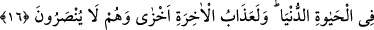

O’NA
ORTAKLAR MI
KOŞUYORSUNUZ?
9. De ki: Gerçekten siz, yeri iki günde yaratanı inkâr edip O’na bir takım
ortaklar mı koşuyorsunuz? O, âlemlerin Rabbidir.
10. O, yeryüzüne sâbit dağlar yerleştirdi. Onu bereketli kıldı ve orada tam dört
günde isteyenler için fark gözetmeden gıdâlar takdir etti.
11. Sonra doğruca duman hâlinde bulunan göğe yöneldi, ona ve arza: İster
istemez buyruğuma gelin! dedi. İkisi de «İsteyerek geldik» dediler.
12. Böylece onları, iki günde yedi gök olarak yarattı ve her göğe görevini
vahyetti. Ve biz, yakın semâyı kandillerle donattık, bozulmaktan da koruduk. İşte